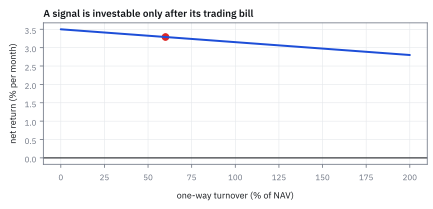
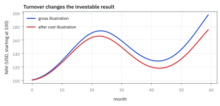
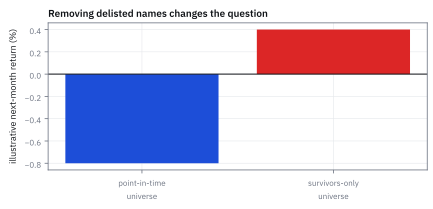

15.6 Momentum and Trend-Following: a Worked Strategy
momentum เดิมพันว่าสิ่งที่ขึ้นมาในช่วงหลายเดือนจะขึ้นต่อ และการเปลี่ยนความคิดนี้เป็นเงินจริงต้องนิยามเวลาให้ครบ หักต้นทุนในบรรทัดเดียวกัน นับว่าลองมากี่แบบ และใส่หุ้นที่หายไปจากตลาดกลับเข้าไป
นักวิจัยเสนอกลยุทธ์ momentum บน NAV \$1 ล้าน: long หุ้นผู้ชนะ \$1 ล้าน short หุ้นผู้แพ้ \$1 ล้าน เดือนล่าสุดผู้ชนะได้เฉลี่ย 2.0% ผู้แพ้ได้ −1.5% และ backtest ชนะดัชนี 9 ใน 10 ปี เขาสรุปว่า “เดือนละ 3.5% ชนะเกือบทุกปี” ถ้า turnover ต่อเดือนคือ 60% ของ NAV ต้นทุน 0.35% ต่อ turnover หนึ่งหน่วย และกฎนี้เป็นตัวที่ดีที่สุดจาก 20 แบบที่ลอง ต้องถามอะไรก่อนเชื่อ
ลองตอบก่อนเปิดเฉลย
หักต้นทุน $0.60\times0.35\%=0.21\%$ เหลือ 3.29% หรือ \$32,900 ส่วนสถิติชนะ 9 ใน 10 ปีอ่อนกว่าที่ฟัง กฎที่ไม่มีฝีมือเลยทำได้ด้วยโอกาส $11/1024\approx1.07\%$ แต่เมื่อเลือกตัวที่ดีที่สุดจาก 20 แบบ โอกาสที่อย่างน้อยหนึ่งแบบทำได้ด้วยโชคล้วนคือราว 19.4% ยังต้องถามต่อว่ารายชื่อหุ้นรวมหุ้นที่ถูกถอนออกจากตลาดแล้วหรือยัง และเดือนที่ผู้แพ้ดีดกลับแรง ๆ เสียได้เท่าไร
ภาพรวมก่อนลงสูตร
คำถามที่ทดสอบได้คือ “สิ่งที่ขึ้นมาแล้วจะขึ้นต่อไหม” มีสองแบบ แบบแรกคือ cross-sectional momentum: จัดอันดับหุ้นหลายตัวเทียบกันเอง long กลุ่มที่ชนะเพื่อนในช่วง 3 ถึง 12 เดือนที่ผ่านมา short กลุ่มที่แพ้ งานของ Jegadeesh กับ Titman ปี 1993 พบในหุ้นสหรัฐฯ ปี 1965 ถึง 1989 ว่าผู้ชนะชนะผู้แพ้ต่อราวเดือนละ 1% ซึ่ง beta ของ CAPM อธิบายไม่ได้ แบบที่สองคือ trend-following หรือ time-series momentum: ดูแต่ละสินทรัพย์เทียบกับอดีตของมันเอง ขึ้นมาก็ long ลงมาก็ short นิยมใช้กับ futures ของดัชนี พันธบัตร สินค้าโภคภัณฑ์ และค่าเงิน
ทำไมมันจึงอาจมีอยู่ ฝั่งหนึ่งบอกว่านักลงทุนตอบสนองต่อข่าวช้าในช่วงแรกแล้วแห่ตามกันภายหลัง อีกฝั่งบอกว่ามันคือค่าตอบแทนของความเสี่ยงที่จะพังแรงเป็นครั้งคราว ทั้งสองยังเถียงกันอยู่ สิ่งที่ข้อมูลบอกชัดคือกรอบเวลาสำคัญ: ผลตอบแทน 3 ถึง 12 เดือนมักไปต่อ แต่ผลตอบแทนเดือนเดียวหรือสัปดาห์เดียวล่าสุดมักกลับทิศ (reversal)
หน้านี้สร้างกลยุทธ์ทีละขั้นตามวินัยของ spurious regression และ overfitting: นิยามสัญญาณให้รู้ก่อนเทรด ลองกฎ trend-following บนสินทรัพย์ตัวเดียว สร้างพอร์ต long–short วัด turnover แล้วหักต้นทุน นับว่าลองมากี่แบบ ใส่หุ้นที่หายไปกลับเข้ารายชื่อ และจบที่เดือนที่กลยุทธ์พัง รูปด้านล่างแสดงทั้งเรื่องของ trend-following ในภาพเดียว: มันทำเงินในขาขึ้นและขาลงที่ยาวพอ และเสียเงินในช่วงที่ราคาแกว่งไม่มีทิศ
รูป — กฎ trend-following บนราคาที่ขึ้น ลง แล้วแกว่ง
ศัพท์ที่ใช้ในหัวข้อนี้
- Cross-sectional momentum
- จัดอันดับหลายหุ้น ณ เวลาเดียวกันตามผลตอบแทนย้อนหลัง แล้ว long ผู้ชนะ short ผู้แพ้ เดิมพันว่าผู้ชนะยังชนะผู้แพ้ต่อ ไม่สนว่าตลาดทั้งตลาดขึ้นหรือลง
- Trend-following
- ดูผลตอบแทนย้อนหลังของแต่ละสินทรัพย์แยกกัน ขึ้นมาก็ long ลงมาก็ short เรียกอีกชื่อว่า time-series momentum ใช้กับ futures หลายประเภทสินทรัพย์
- Lookback และ skip month
- ช่วงอดีตที่ใช้คำนวณสัญญาณ และเดือนล่าสุดที่จงใจเว้นไว้ เพราะผลเดือนเดียวล่าสุดมักกลับทิศ
- Volatility targeting
- การกำหนดขนาดสถานะให้แต่ละตัวมีความผันผวนเท่ากัน เช่นสินทรัพย์ที่ผันผวนสองเท่าถือครึ่งหนึ่ง ทำให้สินทรัพย์ต่างประเภทเทียบกันได้
- Turnover
- สัดส่วนของ NAV ที่ซื้อขายในการปรับพอร์ตหนึ่งครั้ง นับด้านเดียว ใช้คำนวณต้นทุนการซื้อขาย
- Survivorship bias และ delisting return
- ความเอียงที่เกิดเมื่อข้อมูลเหลือแต่หุ้นหรือกองทุนที่รอดมาถึงวันนี้ และผลตอบแทนงวดสุดท้ายของหุ้นที่ถูกถอนออกจากตลาด ซึ่งต้องใส่กลับเข้าไปใน backtest
- Momentum crash
- เดือนที่ผู้แพ้ในอดีตดีดกลับแรงกว่าผู้ชนะมาก มักเกิดตอนตลาดฟื้นหลังวิกฤต ขา short ขาดทุนหนักพร้อมกัน
สัญลักษณ์และหน่วย
| สัญลักษณ์ | ความหมาย | หน่วย |
|---|---|---|
| $P_{i,t},\ r_{i,t}$ | ราคาสิ้นเดือน $t$ และผลตอบแทนระหว่างเดือน $t$ ของหุ้น $i$ | ดอลลาร์ และสัดส่วนต่อเดือน |
| $L$ | จำนวนเดือนใน lookback | เดือน |
| $s_{i,t}$ | สัญญาณ momentum ที่ใช้เลือกหุ้นสำหรับเดือน $t$ | สัดส่วน |
| $q_t,\ w$ | ทิศของสถานะ trend-following (+1 หรือ −1) และขนาดสถานะต่อ NAV | ไม่มีหน่วย และสัดส่วนของ NAV |
| $N_W,\ N_L$ | จำนวนหุ้นในกลุ่มผู้ชนะและผู้แพ้ | หุ้น |
| $w_i$ | น้ำหนักของหุ้น $i$ ต่อ NAV | สัดส่วนของ NAV |
| $\tau,\ c$ | turnover ด้านเดียว และต้นทุนรวม | สัดส่วนของ NAV ต่อการปรับพอร์ต |
| $r^{\rm LS}$ | ผลตอบแทนของพอร์ต long–short | สัดส่วนของ NAV ต่อเดือน |
| $M$ | จำนวนแบบของกฎที่ลองก่อนเลือก | นับ |
ขั้นที่ 1 — นิยามสัญญาณ: ทบต้นผลตอบแทนย้อนหลัง และเว้นเดือนล่าสุด
สัญญาณต้องรู้ได้ก่อนเริ่มเดือนที่ถือ และต้องวัดว่าหุ้นโตมาเท่าไรจริง ไม่ใช่เอาผลแต่ละเดือนมาบวกกัน ให้ $t$ เป็นเดือนที่จะถือ ใช้ $L$ เดือนก่อนหน้าโดยเว้นเดือน $t-1$ ไว้
ผลคูณของอัตราส่วนราคาตัดกันเป็นทอด ๆ ราคาระหว่างทางหายหมด เหลือราคาปลายหารด้วยราคาต้น ผลตอบแทนสะสมจึงเป็นผลคูณ ไม่ใช่ผลบวก ขึ้น 5% แล้วลง 2% เหลือโต $1.05\times0.98=1.029$ คือ 2.9% ไม่ใช่ 3% เพราะเดือนที่สองลง 2% จากฐานใหม่ 1.05 ไม่ใช่จากฐานเดิม 1 (เหตุผลเดียวกับที่ใช้ log ราคาใน lognormal distribution) สามเดือนตัวอย่าง 5%, −2%, 4% รวมได้ 7.016% ส่วนการบวกตรง ๆ ได้ 7%
การเว้นเดือน $t-1$ เป็นการตัดสินใจเชิงโครงสร้าง ผลตอบแทนเดือนเดียวล่าสุดมักกลับทิศในเดือนถัดไป (short-term reversal) และยิ่งช่วงสั้นยิ่งกลับแรง ส่วนหนึ่งมาจากราคาปิดที่เด้งระหว่าง bid กับ ask ถ้าไม่เว้น กฎจะซื้อหุ้นที่เพิ่งเด้งขึ้นไปที่ ask แล้วเสียส่วนนั้นคืน แบบที่ใช้กันแพร่หลายคือมองย้อน 12 เดือนแล้วตัดเดือนล่าสุดทิ้ง เรียกว่า “12-1” ซึ่งคือ $L=11$ ในสูตรนี้ ตัวอย่างในหน้านี้ใช้ $L=3$ เพื่อให้คิดตามได้
รูป — ไทม์ไลน์ของสัญญาณ: รู้ครบก่อนเริ่มถือ
ขั้นที่ 2 — trend-following บนสินทรัพย์ตัวเดียว: ได้ในเทรนด์ เสียตอนเลี้ยว
โจทย์ให้อะไรมาบ้าง: ราคาสิ้นเดือนสมมติของ futures ดัชนีหุ้น เดือน 0 ถึง 10 คือ 100, 102, 105, 108, 112, 115, 113, 108, 104, 100, 98 กฎ: สิ้นเดือน $t$ คำนวณผลตอบแทนสามเดือน ถ้าบวกถือ long ในเดือน $t+1$ ถ้าลบถือ short ความผันผวนของ futures นี้ประมาณได้ 20% ต่อปี และกองทุนตั้งเป้าความผันผวนต่อสถานะไว้ 10% ต่อปี
| เดือนที่ถือ | สัญญาณที่รู้ก่อนเริ่มเดือน | สถานะ | P&L ของกฎ |
|---|---|---|---|
| 4 | +8.00% | long | +3.70% |
| 5 | +9.80% | long | +2.68% |
| 6 | +9.52% | long | −1.74% |
| 7 | +4.63% | long | −4.42% |
| 8 | −3.57% | short | +3.70% |
| 9 | −9.57% | short | +3.85% |
| 10 | −11.50% | short | +2.00% |
คำตอบ: กฎได้ +9.85% ทบต้นตลอดเดือน 4 ถึง 10 ขณะที่การถือ long ตลอดตั้งแต่สิ้นเดือน 3 เสีย 9.26% ทำเงินทั้งขาขึ้น (เดือน 4–5) และขาลง (เดือน 8–10) ราคาที่จ่ายคือสองเดือนตอนเลี้ยว (เดือน 6–7 เสียรวมราว 6%) เพราะสัญญาณสามเดือนยังเป็นบวกจนราคาลงพ้นระดับเมื่อสามเดือนก่อน กฎนี้จึงไม่เคยจับยอดหรือก้นได้ มันจับ “ตรงกลาง” ของเทรนด์ ถ้าราคาเลี้ยวบ่อยกว่าความยาวของ lookback ส่วนตรงกลางไม่มี เหลือแต่ค่าเลี้ยว ซึ่งคือช่วงแกว่งในรูปภาพรวม
บรรทัดสุดท้ายคือขนาดสถานะ ถ้าถือ futures ดัชนีหุ้นเต็ม NAV ความผันผวนของกองทุนจะเท่ากับของดัชนี 20% การถือ 0.5 เท่าของ NAV (\$500,000 บน NAV \$1 ล้าน) ทำให้สถานะนี้มีความผันผวน 10% ตามเป้า futures พันธบัตรที่ผันผวน 5% ต่อปีต้องถือ $10\%/5\%=2$ เท่าของ NAV จึงมีน้ำหนักความเสี่ยงเท่ากัน กองทุน trend-following ปรับขนาดแบบนี้ทุกตัว และเมื่อความผันผวนพุ่งขึ้น ขนาดสถานะลดลงเอง ซึ่งมักเป็นช่วงที่ตลาดกำลังจะพัง
ตรวจเองใน 10 วินาที: เดือน 7 ถือ long เพราะ $113/108\approx1.046$ แต่ราคาลงจาก 113 เป็น 108 คือ $-4.42\%$ เดือน 8 ถือ short เพราะ $108/112\lt1$ แล้วราคาลงจาก 108 เป็น 104 ($-3.70\%$) short จึงได้ $+3.70\%$
ขั้นที่ 3 — พอร์ต cross-sectional: long ผู้ชนะ short ผู้แพ้ ในน้ำหนักเท่ากัน
กลับมาที่หุ้นหลายตัว จัดอันดับทุกตัวตาม $s_{i,t}$ จากขั้นนิยามสัญญาณ กลุ่มบนคือผู้ชนะ $N_W$ ตัว กลุ่มล่างคือผู้แพ้ $N_L$ ตัว ให้น้ำหนักเท่ากันภายในแต่ละกลุ่มเพื่อไม่ให้ผลขึ้นกับหุ้นตัวใดตัวหนึ่ง
ผลรวมของขา long คือค่าเฉลี่ยของผู้ชนะ ขา short คือลบค่าเฉลี่ยของผู้แพ้ เงินสุทธิที่ลงคือศูนย์ เพราะเงินจากการ short จ่ายค่าหุ้นขา long แต่ gross exposure คือสองเท่าของ NAV ผู้แพ้ที่ลง 1.5% เป็นกำไรของเรา เพราะเรา short ไว้ ตัวอย่างใช้ผู้ชนะสองตัวและผู้แพ้สองตัวเพื่อให้คิดตามได้ ของจริงใช้หุ้นกลุ่มบนและล่างสิบเปอร์เซ็นต์ของตลาด ซึ่งเป็นร้อยตัวต่อขา
รูป — จัดอันดับด้วยอดีต แล้ววัดผลในเดือนถัดไป
ขั้นที่ 4 — turnover: ทำไมต้องหารสอง และ 60% หมายถึงอะไร
ต้นทุนเกิดจากการซื้อขาย จึงต้องวัดว่าแต่ละเดือนเปลี่ยนน้ำหนักไปเท่าไร ขายหุ้นหนึ่ง 50% แล้วซื้ออีกตัว 50% ผลรวมของการเปลี่ยนแบบค่าสัมบูรณ์คือ 100% แต่เงินที่หมุนจริงคือ 50% ของพอร์ต ดูทีละขั้นว่าทำไม
ถ้า net exposure คงที่ ผลรวมของการเปลี่ยนน้ำหนักเป็นศูนย์ ยอดซื้อจึงเท่ากับยอดขายพอดี ผลรวมค่าสัมบูรณ์นับทั้งสองฝั่ง หารสองจึงได้ยอดที่ต้องซื้อหนึ่งฝั่ง ต้นทุนต่อหน่วยในหน้านี้นิยามว่ารวมทั้งการขายตัวเก่าและซื้อตัวใหม่แล้ว
ลองกับพอร์ตเล็กในรูปด้านล่าง: long A, B ตัวละ 0.5 short C, D ตัวละ 0.5 เดือนหน้าเปลี่ยน B เป็น E และ D เป็น F การเปลี่ยนคือ 0.5 สี่ตัว รวม 2.0 ได้ $\tau=1.0$ เปลี่ยนครึ่งหนึ่งของแต่ละขาคือ turnover 100% ของ NAV เพราะ gross เป็นสองเท่าของ NAV turnover 60% ในโจทย์จึงหมายถึงเปลี่ยนราว 30% ของแต่ละขา และระหว่างเดือนน้ำหนักยังลอยตามราคา ต้องวัดจากน้ำหนักที่ลอยแล้ว ไม่ใช่จากน้ำหนักเป้าเดือนก่อน
รูป — น้ำหนักเดือนก่อนกับเดือนนี้ ของพอร์ตหกชื่อ
ขั้นที่ 5 — หักต้นทุนในบรรทัดเดียวกัน แล้วแปลงเป็นเงิน
โจทย์ให้อะไรมาบ้าง: gross 3.5% จากพอร์ต long–short turnover $\tau=0.60$ ต่อเดือน ต้นทุน 0.35% ต่อ turnover หนึ่งหน่วย (รวม commission, bid–ask spread และผลกระทบต่อราคา) NAV \$1,000,000
คำตอบ: กำไรสุทธิ 3.29% หรือ \$32,900 ต้นทุน \$2,100 เป็นเงินจริงที่จ่ายให้โบรกเกอร์และตลาด NAV สิ้นเดือนคือ \$1,032,900 ถ้า turnover สูงถึง 10 เท่าของ NAV ต่อเดือน ต้นทุนจะกินกำไรหมด กฎที่ปรับพอร์ตรายวันจึงต้องการ gross สูงกว่านี้มาก และในงานจริงต้นทุนต่อหน่วยไม่คงที่ แบบจำลองต้นทุนที่ใช้กันคิดต้นทุนต่อดอลลาร์ที่ซื้อขายเป็นส่วนคงที่ (spread และค่านายหน้า) บวกส่วนที่โตตามขนาดคำสั่งเทียบกับปริมาณซื้อขายเฉลี่ยต่อวันยกกำลังราว 0.5 ถึง 0.7 กองทุนยิ่งใหญ่ ต้นทุนต่อหน่วยยิ่งแพง ซึ่งหน้าถัดไป alpha decay และ crowding ใช้หาขนาดกองทุนที่รับได้
ตรวจเองใน 10 วินาที: $2.0+1.5=3.5$ ลบ 0.21 ได้ 3.29 และ $0.0329\times1{,}000{,}000=32{,}900$
รูป — turnover เปลี่ยน gross เป็น net

รูป — ต้นทุนเล็กต่อเดือน สะสมเป็นช่องว่างใหญ่

ขั้นที่ 6 — ชนะ 9 ใน 10 ปี จากกฎที่ดีที่สุดใน 20 แบบ
กฎในโจทย์ไม่ได้ถูกเลือกไว้ก่อน มันเป็นตัวที่ดีที่สุดจาก lookback 4 แบบ × ระยะถือ 5 แบบ = 20 แบบ ถ้าไม่มีกฎไหนมีฝีมือ แต่ละปีชนะดัชนีด้วยโอกาสครึ่งหนึ่งและปีต่าง ๆ อิสระกัน จำนวนปีที่ชนะจึงเป็น binomial ($n=10$, $p=1/2$) คิดแบบเดียวกับการเลือกผู้จัดการกองทุนใน ปัญหาการทดสอบหลายครั้ง
1.07% เป็นโอกาสของกฎที่ถูกกำหนดไว้ก่อนดูข้อมูล พอเลือกตัวที่ดีที่สุดจาก 20 แบบ คำถามเปลี่ยนเป็น “มีสักแบบไหมที่ทำได้” ซึ่งคือหนึ่งลบโอกาสที่ไม่มีแบบไหนทำได้เลย ได้ 19.4% เกือบหนึ่งในห้า ตรวจเร็ว ๆ: $1-0.99^{20}\approx18\%$ ใกล้ 19.4%
ข้อสมมติว่าแต่ละแบบอิสระกันไม่จริงนัก เพราะกฎที่ต่างกันแค่ lookback ให้ผลคล้ายกัน จำนวนแบบที่อิสระจริงจึงน้อยกว่า 20 แต่สิ่งที่ต้องทำไม่เปลี่ยน: จดว่าลองมากี่แบบ และทดสอบผู้ชนะกับข้อมูลที่ไม่ได้ใช้เลือก ด้วย walk-forward แบบใน spurious regression และ overfitting ยิ่งมีเหตุผลเชิงกลไกว่าทำไม lookback 3 ถึง 12 เดือนควรทำงานก่อนดูผล ยิ่งไม่ต้องลองหลายแบบ
ขั้นที่ 7 — ผู้รอด: ข้อมูลที่เก็บแต่คนที่ยังอยู่
โจทย์ให้อะไรมาบ้าง: สองสถานการณ์ แรก ผู้จัดการ 1,000 คนไม่มีใครมีฝีมือ แต่ละปีชนะดัชนีด้วยโอกาสครึ่งหนึ่ง ใครแพ้ถูกไล่ออก ฐานข้อมูลเก็บเฉพาะคนที่ยังทำงานอยู่ สอง ขาผู้แพ้ของพอร์ต momentum มีหุ้น 10 ตัว (ตัวเลขสมมติ) เดือนถัดไป 9 ตัวที่รอดให้ผลตอบแทนเฉลี่ย +0.4% อีกตัวถูกถอนออกจากตลาด ผู้ถือได้เงินคืนคิดเป็นผลตอบแทนงวดสุดท้าย −11.6% ฐานข้อมูลแบบรายชื่อปัจจุบันไม่มีหุ้นตัวนี้เลย
คำตอบ: หลังห้าปีเหลือราว 31 คน ทุกคนมีสถิติชนะ 5 ใน 5 ปี ถ้าดูแค่ฐานข้อมูลของคนที่ยังอยู่ อัตราชนะคือ 100% ทั้งที่ไม่มีใครมีฝีมือ กรณีหุ้นก็เป็นแบบเดียวกัน ขา short ของเราได้ $+0.8\%$ จริง แต่ backtest ที่ใช้เฉพาะผู้รอดรายงานว่าขา short เสีย 0.4% ในตัวอย่างนี้ความเอียงทำให้ momentum ดูแย่กว่าจริง 1.2 จุด เพราะเรา short หุ้นที่ล้ม ถ้าเป็นกลยุทธ์ long อย่างเดียวที่ซื้อหุ้นกลุ่มนั้น ความเอียงจะกลับทิศและทำให้ดูดีกว่าจริง ทิศของความเอียงขึ้นกับขาที่ถือ แต่ทั้งสองกรณี backtest ตอบคนละคำถามกับตลาดจริง
ทางแก้คือตั้งกฎเลือกรายชื่อที่ใช้ได้ ณ ทุกวันในอดีต (เช่นสมาชิกของดัชนีกว้างตามวันจริง) และตั้งข้อสมมติเรื่อง delisting ที่ระมัดระวังก่อนรัน backtest ข้อสมมติที่ระมัดระวังขึ้นกับขา: สำหรับขา long การสมมติว่าเสียทั้งหมด (−100%) คือระมัดระวัง แต่สำหรับขา short ข้อสมมติเดียวกันจะยกกำไรให้เราเกินจริง (ขาผู้แพ้จะเฉลี่ย $(3.6\%-100\%)/10=-9.64\%$) การแก้กฎรายชื่อหลังเห็นผลก็เป็นการรั่วของข้อมูลอีกแบบ
ตรวจเองใน 10 วินาที: $0.5^5=1/32$ และ $1{,}000/32=31.25$ ส่วน $9\times0.4=3.6$ บวก $-11.6$ ได้ $-8.0$ หารด้วย 10 ได้ $-0.8$
รูป — รายชื่อหุ้นที่รู้ ณ วันนั้น เทียบรายชื่อผู้รอด

ขั้นที่ 8 — long–short ไม่ใช่ไร้ความเสี่ยง: เดือนที่ผู้แพ้ดีดกลับ
โจทย์ให้อะไรมาบ้าง: เดือนสมมติหลังตลาดตกหนัก ตลาดฟื้นแรง หุ้นผู้แพ้ซึ่งตกมากที่สุดดีดกลับเฉลี่ย +25% ส่วนผู้ชนะได้แค่ +2% พอร์ตเดิม NAV \$1 ล้าน หลังจากนั้นกลยุทธ์กลับมาได้เดือนละ 3.29% แบบเดือนในขั้นหักต้นทุน
คำตอบ: เดือนเดียวเสีย 23% ของ NAV หรือ \$230,000 ต้องใช้เดือนดีติดกันราว 8 เดือนเพื่อกลับมาที่เดิม ขาดทุนแบบนี้ไม่ได้มาจากตลาดขึ้นหรือลงตรง ๆ เพราะพอร์ตมี net เป็นศูนย์ แต่มาจากการที่สองขาขยับต่างกันมาก หลังตลาดตกหนัก ขาผู้แพ้เต็มไปด้วยหุ้น beta สูงที่ร่วงตามตลาด เมื่อตลาดดีดกลับ มันจึงดีดแรงที่สุด จึงต้องรายงาน gross exposure, net exposure, beta ของแต่ละขา และ drawdown แยกกัน เหตุการณ์จริงที่คล้ายกันคือช่วงตลาดฟื้นในปี 2009
ตรวจเองใน 10 วินาที: $0.77\times1.2987\approx1$ และ $1.0329^8\approx1.296$ ใกล้ 1.2987
รูป — เดือนเดียวที่หาย กับแปดเดือนที่ต้องใช้คืน
ความผิดที่ทำให้ backtest ของ momentum สวยกว่าจริง
วัด turnover ต่อขาแล้วคิดต้นทุนต่อ NAV: ถ้า “เปลี่ยน 60%” หมายถึงเปลี่ยน 60% ของรายชื่อในแต่ละขา turnover ต่อ NAV คือ $0.6\times2=1.2$ ต้นทุนเป็น 0.42% ไม่ใช่ 0.21% กำไรสุทธิเหลือ 3.08% ไม่ใช่ 3.29% ต้องเขียนให้ชัดว่า turnover วัดเทียบกับอะไร
นับวันผิดหนึ่งช่อง: ถ้าสัญญาณใช้ราคาปิดของเดือนที่ถือเอง หุ้นที่ขึ้น 25% ในเดือนนั้นถูกจัดเป็นผู้ชนะเพราะมันขึ้น 25% และ backtest จะบันทึกกำไร 25% นั้นไว้ทั้งก้อน ความผิดแบบนี้เกิดกับนักวิจัยที่มีประสบการณ์มาแล้ว ตรวจทุกตัวเลขว่ามี ณ เวลาไหน และข้อมูลบัญชีต้องลงวันที่ประกาศ ไม่ใช่วันสิ้นไตรมาส
ถือทุกสินทรัพย์ด้วย notional เท่ากัน: futures ดัชนีหุ้นที่ผันผวน 20% กับ futures พันธบัตรที่ผันผวน 5% ในขนาดเท่ากัน ฝั่งหุ้นถือความผันผวน 4 เท่าและ variance 16 เท่า พอร์ต trend-following “หลายสินทรัพย์” จึงกลายเป็นพอร์ตหุ้นตัวเดียว ต้องปรับขนาดด้วยความผันผวน
คูณเดือนเดียวด้วย 12: 3.29% ของเดือนหนึ่งคูณ 12 ได้ 39.5% ต่อปี แต่เดือนแบบ crash หนึ่งเดือนลบกำไรไปแปดเดือน ต้องใช้ผลทุกเดือนใน walk-forward ไม่ใช่เดือนที่ดีที่สุด
ใช้ทำอะไรบนโต๊ะจริง
momentum เป็นหนึ่งใน factor มาตรฐานของ multi-factor model ใช้ทั้งเป็นกลยุทธ์โดยตรง และเป็น exposure ที่ต้องหักออกก่อนเรียกผลงานของผู้จัดการว่า alpha ก่อนรันทุกครั้งต้องล็อก: ชนิดหลักทรัพย์ ตลาด ราคาขั้นต่ำ วันที่ข้อมูลพร้อมใช้ วิธีปรับ corporate action วิธีรับ delisting return ช่วง lookback ช่วงที่เว้น ระยะถือ เวลาปรับพอร์ต แบบจำลองต้นทุน และค่ายืมหุ้นของขา short ถ้าแก้รายการใดหลังเห็นผล เท่ากับเปลี่ยนโจทย์ งานวิจัยวิชาการส่วนใหญ่สร้างพอร์ตจากการจัดกลุ่มแบบขั้นพอร์ต cross-sectional แล้วละเลย turnover ค่ายืมหุ้น และต้นทุน ตัวเลขในงานวิจัยจึงเป็นเพดาน ไม่ใช่สิ่งที่จะได้จริง
โจทย์ตรวจความเข้าใจ
1. หุ้นหนึ่งมีผลตอบแทนสามเดือนใน lookback เป็น +10%, −10%, +10% สัญญาณคือเท่าไร ต่างจากการบวกตรง ๆ เท่าไร
เฉลย
$1.1\times0.9\times1.1-1=1.089-1=8.9\%$ การบวกตรง ๆ ได้ 10% ต่างกัน 1.1 จุด เพราะขึ้น 10% แล้วลง 10% ไม่ได้กลับที่เดิม $1.1\times0.9=0.99$ หายไป 1% ทุกครั้งที่แกว่ง
2. ถ้าทุกเดือนเปลี่ยนครึ่งหนึ่งของรายชื่อในแต่ละขา ต้นทุนเดิม 0.35% ต่อ turnover หนึ่งหน่วย กำไรสุทธิของเดือนในขั้นหักต้นทุนเป็นเท่าไร
เฉลย
พอร์ตหกชื่อในขั้น turnover แสดงว่าเปลี่ยนครึ่งหนึ่งของแต่ละขาคือ $\tau=1.0$ ต้นทุน $1.0\times0.35\%=0.35\%$ สุทธิ $3.5\%-0.35\%=3.15\%$ หรือ \$31,500
3. ราคาสิ้นเดือน 0 ถึง 6 คือ 50, 53, 55, 54, 51, 49, 50 ใช้กฎ trend-following ที่ดูผลตอบแทนสองเดือน ($s_t=P_t/P_{t-2}-1$) สถานะในเดือน 3 ถึง 6 คืออะไร ผลทบต้นของกฎเป็นเท่าไร เทียบกับการถือ long ตั้งแต่สิ้นเดือน 2
เฉลย
$s_2=55/50-1=+10\%$ จึง long เดือน 3 ราคาลงจาก 55 เป็น 54 ได้ $-1.82\%$ $s_3=54/53-1=+1.89\%$ long เดือน 4 ราคาลงเป็น 51 ได้ $-5.56\%$ $s_4=51/55-1=-7.27\%$ short เดือน 5 ราคาลงเป็น 49 ได้ $+3.92\%$ $s_5=49/54-1=-9.26\%$ short เดือน 6 ราคาขึ้นเป็น 50 ได้ $-2.04\%$ ทบต้น $0.9818\times0.9444\times1.0392\times0.9796-1\approx-5.6\%$ ส่วนการถือ long ได้ $50/55-1\approx-9.1\%$ กฎเสียน้อยกว่าแต่ยังเสีย เพราะช่วงนี้มีแค่การเลี้ยวที่ยอดกับการเด้งสั้น ๆ ไม่มีเทรนด์ยาวให้กิน
คำนวณซ้ำด้วย JavaScript
รันใน Node.js ได้โดยไม่ต้องติดตั้งอะไร โค้ดคำนวณสัญญาณแบบทบต้น กฎ trend-following บนราคาตัวอย่างและบนเส้นราคา 44 เดือนในรูปภาพรวม ขนาดสถานะตามเป้าความผันผวน ผลตอบแทน long–short turnover จากน้ำหนักเก่าและใหม่ กำไรสุทธิเป็นเงิน โอกาสของผู้ชนะที่เป็นแค่โชค ตัวอย่างผู้รอดและ delisting และเวลาฟื้นหลัง crash ตรวจว่าผลตอบแทนไม่ต่ำกว่า −100% ราคาเป็นบวก และต้นทุนไม่ติดลบ
เปิดดูโค้ด
const {sqrt, log, sin, cos, imul, PI} = Math;
// Momentum signal: compound the lookback months (the most recent month is skipped before calling this).
function momentumSignal(monthly) {
if (!Array.isArray(monthly) || monthly.length === 0 || !monthly.every(r => Number.isFinite(r) && r > -1)) {
throw new RangeError('Need monthly returns above -100%');
}
return monthly.reduce((g, r) => g * (1 + r), 1) - 1;
}
// Trend-following on one price series: hold sign(P_t / P_(t-L) - 1) during month t+1.
function trendFollow(prices, L) {
if (!Array.isArray(prices) || prices.length < L + 2 || !prices.every(p => Number.isFinite(p) && p > 0) || !Number.isInteger(L) || L < 1) {
throw new RangeError('Need positive prices, a whole lookback L >= 1 and at least L + 2 prices');
}
const months = [];
let growth = 1;
for (let t = L; t < prices.length - 1; t++) {
const signal = prices[t] / prices[t - L] - 1, position = Math.sign(signal), r = prices[t + 1] / prices[t] - 1;
growth *= 1 + position * r;
months.push({month: t + 1, signal, position, r, pnl: position * r});
}
return {months, total: growth - 1};
}
// Volatility targeting: notional per unit of NAV so that each position carries the same risk.
function volTarget(target, assetVol) {
if (!(target > 0) || !(assetVol > 0)) throw new RangeError('Volatilities must be positive');
return target / assetVol;
}
const mean = list => list.reduce((s, v) => s + v, 0) / list.length;
// Equal-weight long winners, short losers: weights +1/N and -1/N, return = mean(W) - mean(L).
function longShort(winners, losers) {
if (!Array.isArray(winners) || !Array.isArray(losers) || !winners.length || !losers.length || ![...winners, ...losers].every(Number.isFinite)) {
throw new TypeError('Need non-empty lists of finite returns for both legs');
}
const weights = [...winners.map(() => 1 / winners.length), ...losers.map(() => -1 / losers.length)];
return {gross: mean(winners) - mean(losers), net: weights.reduce((s, w) => s + w, 0), grossExposure: weights.reduce((s, w) => s + Math.abs(w), 0)};
}
// One-way turnover: half the total absolute change in weights (every sale funds an equal purchase).
function turnover(before, after) {
const names = new Set([...Object.keys(before), ...Object.keys(after)]);
let total = 0;
for (const k of names) {
const a = k in before ? before[k] : 0, b = k in after ? after[k] : 0; // a missing name has weight 0
if (!Number.isFinite(a) || !Number.isFinite(b)) throw new TypeError('Weights must be finite numbers');
total += Math.abs(b - a);
}
return total / 2;
}
function netOfCost(gross, tau, costPerTurn, nav) {
if (![gross, tau, costPerTurn, nav].every(Number.isFinite) || tau < 0 || costPerTurn < 0 || nav <= 0) {
throw new RangeError('Need finite inputs, non-negative turnover and cost, positive NAV');
}
const cost = tau * costPerTurn, net = gross - cost;
return {cost, net, costUSD: nav * cost, netUSD: nav * net, navAfter: nav * (1 + net), breakEvenTurnover: gross / costPerTurn};
}
// Chance that at least one of M skill-free rules wins at least k of n years (fair coin each year).
function luckyBest(n, k, M) {
if (![n, k, M].every(Number.isInteger) || n < 1 || k < 0 || k > n || M < 1) throw new RangeError('Need whole numbers with 0 <= k <= n and M >= 1');
let ways = 0, choose = 1;
for (let j = 0; j <= n; j++) { if (j >= k) ways += choose; choose = choose * (n - j) / (j + 1); }
const one = ways / 2 ** n;
return {one, best: 1 - (1 - one) ** M, expectedLucky: M * one};
}
// The made-up 44-month price path drawn at the top of the page (seeded, three phases: up, down, choppy).
function normals(seed) {
let a = seed >>> 0, spare = null;
const u = () => { a = (a + 0x6D2B79F5) >>> 0; let t = imul(a ^ (a >>> 15), a | 1); t ^= t + imul(t ^ (t >>> 7), t | 61); return (((t ^ (t >>> 14)) >>> 0) + 0.5) / 4294967296; };
return () => { if (spare !== null) { const z = spare; spare = null; return z; } const r = sqrt(-2 * log(u())), q = 2 * PI * u(); spare = r * sin(q); return r * cos(q); };
}
function pathFigure() {
const z = normals(12), price = [100];
for (let t = 1; t <= 44; t++) {
const drift = t <= 16 ? 0.025 : t <= 30 ? -0.03 : (Math.floor((t - 31) / 2) % 2 === 0 ? 0.025 : -0.025);
price.push(price[t - 1] * (1 + drift + 0.018 * z()));
}
const nav = [100, 100, 100, 100];
trendFollow(price, 3).months.forEach(m => nav.push(nav[nav.length - 1] * (1 + m.pnl)));
const phase = (a, b) => ({price: price[b] / price[a] - 1, trend: nav[b] / nav[a] - 1});
return {up: phase(0, 16), down: phase(16, 30), choppy: phase(30, 44), all: phase(0, 44)};
}
const signal = momentumSignal([0.05, -0.02, 0.04]);
const example = trendFollow([100, 102, 105, 108, 112, 115, 113, 108, 104, 100, 98], 3);
const book = longShort([0.03, 0.01], [-0.01, -0.02]);
const month = netOfCost(book.gross, 0.60, 0.0035, 1e6);
const halfEachLeg = turnover({A: 0.5, B: 0.5, C: -0.5, D: -0.5}, {A: 0.5, E: 0.5, C: -0.5, F: -0.5});
let grossNAV = 100, netNAV = 100; // the two made-up curves of the cost-gap chart
for (let t = 0; t < 60; t++) { grossNAV *= 1 + 0.006 + 0.03 * Math.sin(t / 7); netNAV *= 1 + 0.004 + 0.03 * Math.sin(t / 7); }
console.log(JSON.stringify({
signal, simpleSum: 0.05 - 0.02 + 0.04,
trend: {months: example.months.map(m => [m.month, +(100 * m.signal).toFixed(2), m.position, +(100 * m.pnl).toFixed(2)]), total: example.total, buyHold: 98 / 108 - 1,
equity: volTarget(0.10, 0.20), bond: volTarget(0.10, 0.05)},
pathFigure: pathFigure(),
book, month, halfEachLeg,
luck: {one: luckyBest(10, 9, 1).one, best20: luckyBest(10, 9, 20).best},
survivors: {after5: 1000 * 0.5 ** 5},
delisting: {pointInTime: (9 * 0.4 - 11.6) / 10, survivorsOnly: 0.4},
crash: {month: 0.02 - 0.25, recoverMonths: Math.log(1 / 0.77) / Math.log(1 + month.net)},
costGapChart: {gross: grossNAV, net: netNAV, ratio: netNAV / grossNAV},
perLegMistake: netOfCost(book.gross, 2 * 0.60, 0.0035, 1e6),
exercises: {zigzag: momentumSignal([0.10, -0.10, 0.10]), replaceHalf: netOfCost(book.gross, halfEachLeg, 0.0035, 1e6),
trend: trendFollow([50, 53, 55, 54, 51, 49, 50], 2).total}
}));สิ่งที่ควรตอบได้หลังอ่าน
- สัญญาณคือผลตอบแทนทบต้นของ lookback โดยเว้นเดือนล่าสุด 5%, −2%, 4% ให้ 7.016% ไม่ใช่ 7% และต้องรู้ครบก่อนส่งคำสั่ง
- trend-following ได้ทั้งขาขึ้นและขาลงที่ยาวพอ แต่จ่ายค่าเลี้ยวทุกครั้ง ราคาตัวอย่างให้ +9.85% เทียบกับถือเฉย ๆ −9.26% และช่วงแกว่งในรูปภาพรวมเสีย 20.4%
- turnover คือครึ่งหนึ่งของผลรวมการเปลี่ยนน้ำหนัก เปลี่ยนครึ่งหนึ่งของแต่ละขาคือ 100% ของ NAV และ gross 3.5% ที่ turnover 60% ต้นทุน 0.35% เหลือ 3.29% หรือ \$32,900
- ชนะ 9 ใน 10 ปีเกิดด้วยโชค 1.07% ต่อกฎ แต่ 19.4% สำหรับผู้ชนะจาก 20 แบบ และข้อมูลที่เก็บแต่ผู้รอดตอบคนละคำถาม
- long–short ยังเสียได้ 23% ในเดือนที่ผู้แพ้ดีดกลับ ซึ่งต้องใช้เดือนดีราว 8 เดือนกว่าจะคืน
หน้าถัดไป alpha decay และ crowding ถามต่อว่าแม้สัญญาณจะมีจริง มันจะอยู่นานแค่ไหนเมื่อคนอื่นค้นพบ และจะรับเงินได้เท่าไรก่อนต้นทุนกินกำไรหมด